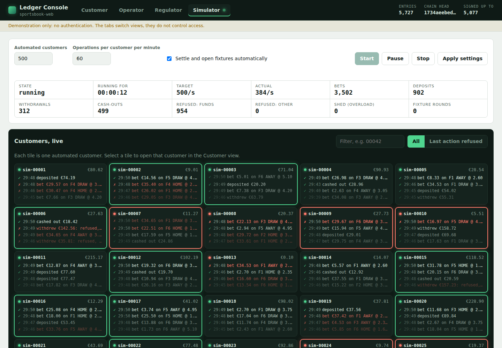
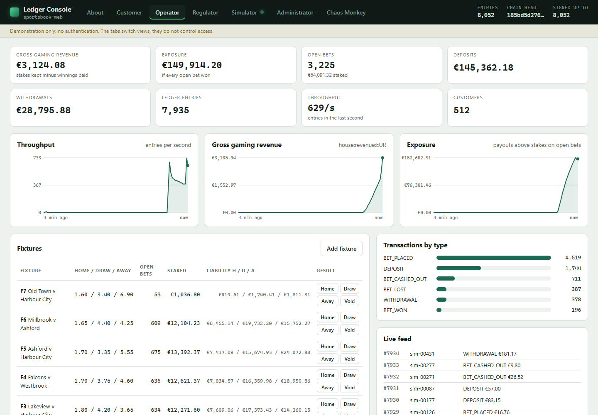
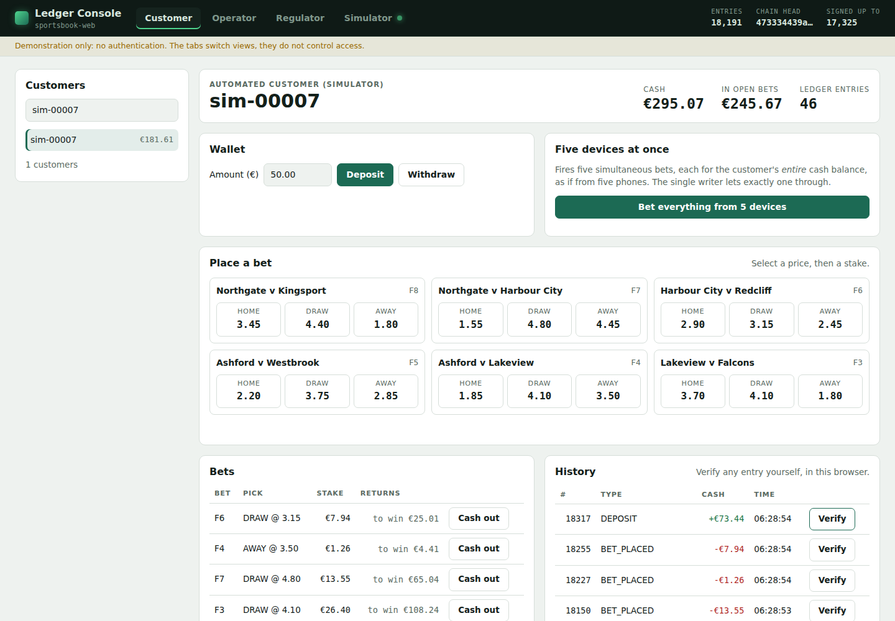
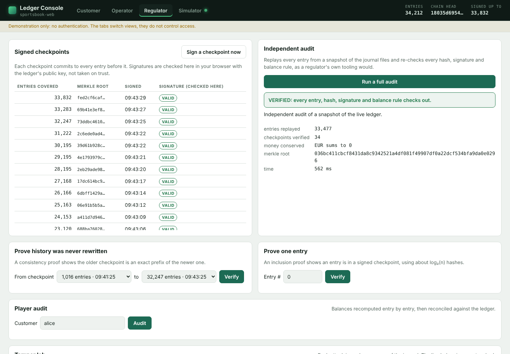
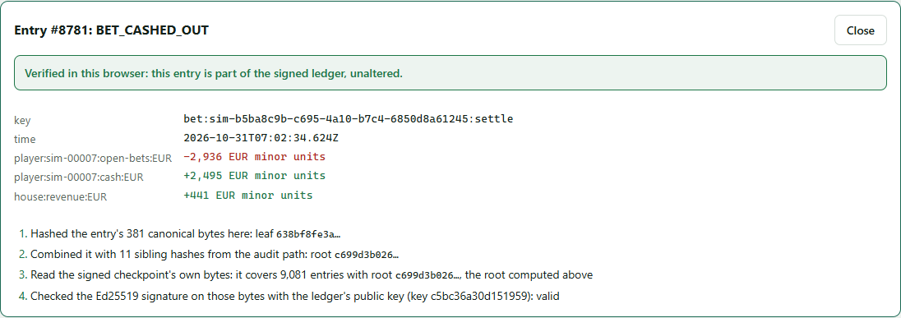
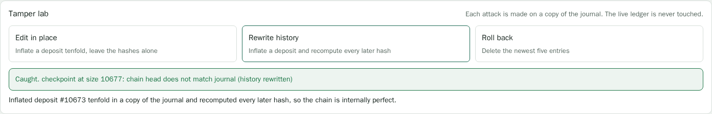
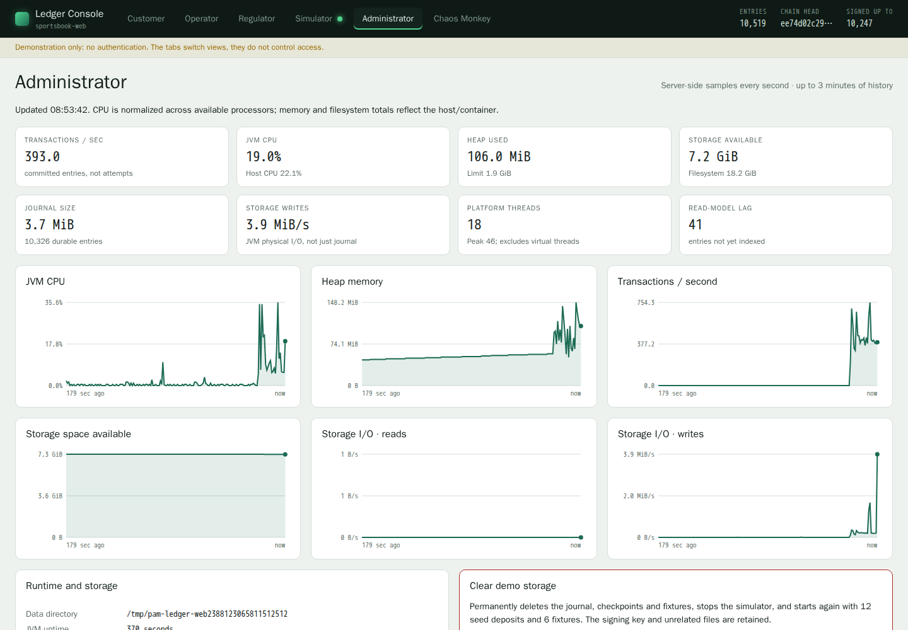
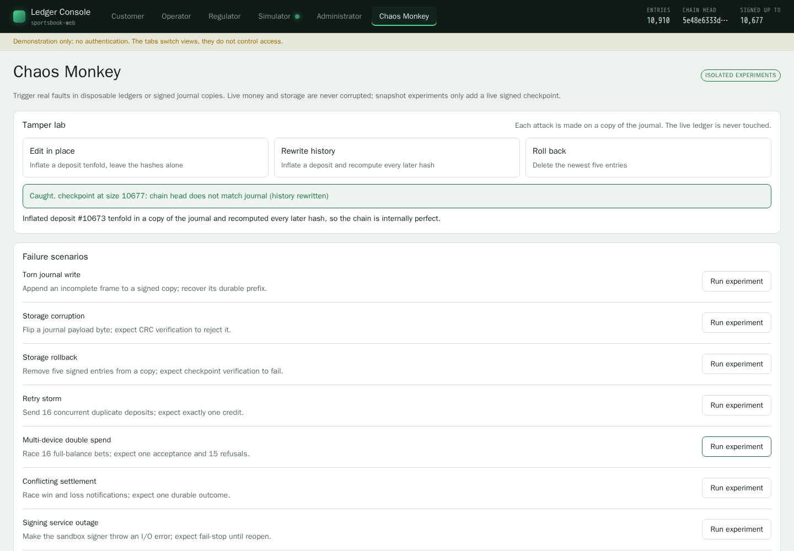

An append-only, double-entry money ledger for a sportsbook player account platform. Every bet, deposit and payout is hash-chained, placed in a Merkle tree and periodically signed, so anyone holding the public key can prove nothing was altered, removed or invented. One writer thread orders every transaction, which makes double spends structurally impossible rather than merely unlikely.
| player:42:cash:EUR | −10.00 |
| player:42:open-bets:EUR | +10.00 |
| Σ EUR | 0.00 |
Illustrative record: every entry is balanced, linked to the one before it, and covered by a signed checkpoint.
The requirements this ledger is built to meet, each with how it is met. In the code means implemented and tested in this repository; Designed means specified in the cloud architecture below but not yet built.
Every transaction is double-entry and its postings must sum to zero in each currency, checked when it is written and again whenever the ledger is replayed.
Each shard has a single writer that applies transactions strictly in order, so two requests for the same money can never both see it available.
Every request carries an idempotency key, and every outcome of a bet shares one settlement key, so retries, double taps and redelivered feeds never move money twice.
Balances become visible only after the entry is safely on disk, and rejections wait until whatever caused them is durable too.
Entries are hash-chained and placed in a Merkle tree, so altering, removing or inserting any entry changes every hash after it.
Signed tree heads expose any rebuilt or truncated history, even if every hash was recomputed, because a forger cannot produce the signature.
Anyone holding the public key can check a single entry with a Merkle proof, or the whole ledger with the offline verifier.
The regulatory test suite checks properties R1 to R6 against the ledger's own replayed history while many devices hammer one account.
A receipt is issued only after fsync, and with replication only after two of three zones have stored the entry; torn writes are quarantined rather than trusted.
Each shard runs three replicas across three availability zones, and a new leader takes over within seconds.
Players are spread across many independent shards, group commit turns extra load into bigger batches, and settlement storms queue in Kafka.
A pilot-light DR region abroad is activated through a key ceremony with M-of-N custodians, with the regulator notified first.
All data is encrypted with in-country HSM keys before it is replicated, so the DR region only ever holds ciphertext it cannot read.
A continuous verifier runs in a separate audit account, and no human holds standing access to production data or keys.
The design runs on AWS, Azure, or any conformant Kubernetes using open standards, including an in-country data centre.
The code is commented throughout, has no runtime dependencies beyond the JDK, and this guide is built from the real source.
Select a component to see what it does, where it lives and what it guarantees. Solid arrows are the write path; dashed arrows are reads and audits.
Each entry stores the hash of the one before it, so changing any old amount breaks every link after it. A careful attacker can recompute the whole chain, which is why the ledger also signs its head. Change an amount below, then switch to the attacker's approach and watch the signed checkpoint catch it anyway.
Replay runs these checks in Replayer.apply and CheckpointCheck.verify (Replay.kt). The signing key never lives with the data, so the attacker cannot produce a matching signature.
The Merkle tree lets a player or regulator confirm a single entry using only log₂(n) hashes. Select a bet. The dashed amber boxes are the audit path the ledger hands over; the green boxes are what the verifier recomputes on its own, ending at the signed root.
At a billion bets the proof is about 30 hashes, roughly 1 KB. See MerkleVerify.inclusion (Merkle.kt), which needs nothing from the operator but the proof and the signed root.
Pick a scenario and step through it. The left pane shows the real Kotlin source with the executing line highlighted; the right pane shows each thread, the queue, the writer's batch, balances and the journal on disk as they change. Hashes are real SHA-256 over a simplified encoding, abbreviated.
A web console is available with multiple personas, all working against the same live ledger:
API POST form bodies are limited to 16 KiB (16,384 bytes) of encoded data before decoding. Larger bodies return HTTP 413 (payload_too_large) without performing the operation; oversized declared lengths are rejected before reading, and chunked uploads use a bounded read of at most 16,385 bytes to detect overflow.








MultiDeviceWalletTest puts one player on six devices at once while a settlement feed redelivers results, three screens poll the balance and a regulator signs checkpoints. Every property is then checked against the ledger's own replayed history rather than the wallet's final numbers. In a typical run, about 13 million balance reads saw zero balances the ledger never held.
| Property | Guarantee | How it is enforced | Tests |
|---|---|---|---|
| R1 | No double spend | One writer applies transactions in order; later requests in a batch see earlier ones through the overlay. | , , , , |
| R2 | Never negative, at any instant | AccountPolicy checked on every posting; replay re-checks every historic balance. | , |
| R3 | No phantom balances | Read structures are updated only after fsync; rejections wait for their batch to commit. The stress test preserves every screen's observations with lossless run-length compression and checks every value against replayed history. | |
| R4 | Exactly-once | Idempotency keys with content fingerprints; one settlement key per bet for every outcome. | , , , , |
| R5 | Full reconciliation | Independent model built from client receipts must equal the ledger to the cent. | , |
| R6 | Provability | Inclusion proof for every receipt; consistency proofs between checkpoints signed mid-storm. | , , , |
Select a ledger test to read exactly what it does; line numbers match the repository. Test names in the table above jump straight to the matching test.
How the ledger runs in production when every bet must be exact, a zone outage must lose nothing, and a World Cup final can multiply traffic a hundredfold in seconds. Switch between AWS, Azure and a cloud-portable build, select any component for the reasoning behind it, run a failure drill, or drag the load slider to see where the pressure goes.
Illustrative model: 64 shard groups, about 25,000 transactions per second of CPU headroom per shard leader, a 1.5 ms commit round (cross-zone quorum plus fsync), and 2,000 requests per second per API pod. Benchmark your own hardware before relying on any figure here.
A bet touches only one player's cash and escrow, so every account a transaction needs lives on one shard, and each shard keeps the code's single-writer guarantee. No distributed transactions, no two-phase commit. House accounts become per shard (house:revenue:EUR:s17) and are summed for reporting, which keeps every entry inside one hash chain.
Each shard is three replicas in three availability zones. The leader replicates every group-commit batch and only issues receipts once two replicas have fsynced it, so losing a whole zone loses no acknowledged bet. A new leader is elected in seconds; clients retry with the same idempotency keys and get their original receipts.
Every journal segment, snapshot and stream record is encrypted inside the primary region with keys that never leave its HSMs, before replication starts. The DR region only ever holds bytes it cannot read. It becomes able to read them only after a declared disaster, when key custodians bring the keys there in a recorded ceremony that the regulator is told about.
The stateless API scales out in seconds and is pre-scaled from the fixture calendar. Inside a shard, group commit turns more traffic into bigger batches rather than more fsyncs. Settlement storms at the final whistle queue in Kafka and drain at full speed. Shards are added ahead of events, never during them.
OverloadedException for back-pressureTreeHeadSignerLedgerVerifier for the audit accountLedger.ktEngine: queue, writer thread, group commit, read API, recovery.SportsbookWallet.ktPAM API: deposits, withdrawals, bets, exactly-once settlement.Replay.ktBalance rules, journal replay checks, checkpoint verification.Journal.ktCRC-framed append-only file, fsync, torn-write recovery, directory lock.Merkle.ktIncremental root, inclusion and consistency proofs and verifiers.Signing.ktTree heads, Ed25519 signer interface (plug in an HSM or KMS).Hashes.kt · EntryCodec.ktDomain-separated SHA-256 and the canonical byte format.LedgerVerifier.ktOffline auditor that needs only the files and a public key.web/Web console: read model, fixtures and betting, simulator, regulator tools, HTTP API../gradlew test # full suite: Merkle, integrity, concurrency, multi-device regulatory suite, web console
./gradlew run # demo: 16 threads of betting, then an independent audit and proofs
./gradlew web # web console at http://localhost:8080
# on Windows: gradlew.bat test, gradlew.bat run
Keep the signing key in an HSM or cloud KMS by implementing TreeHeadSigner. Publish signed tree heads somewhere you do not control, such as a regulator endpoint or a transparency log, so even the operator cannot quietly fork history. Entries are held in memory for proofs and lookups; at very large scale move them to an indexed store or tile-based Merkle storage. Changing AccountPolicy changes what replay accepts, so version it alongside the journal.